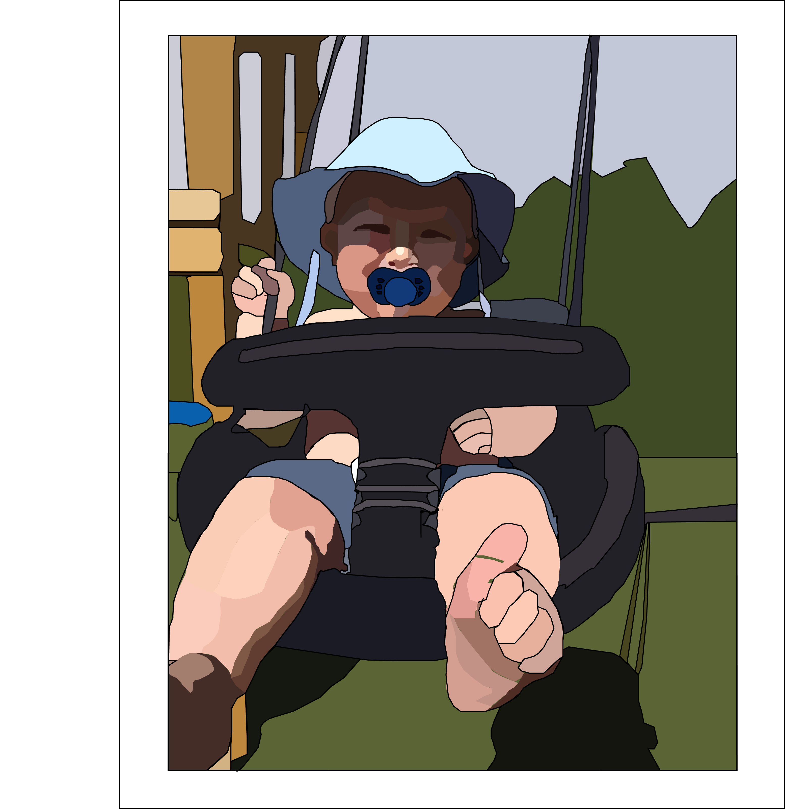
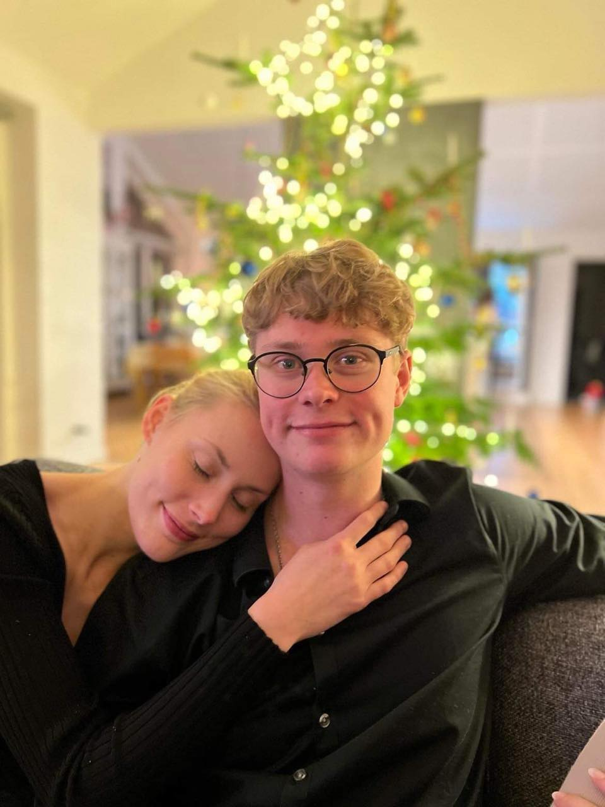
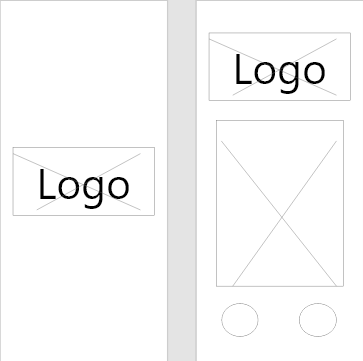
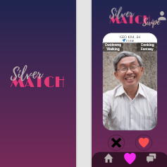
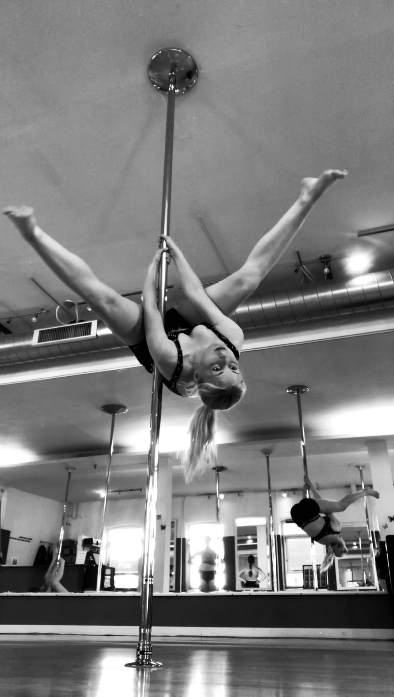
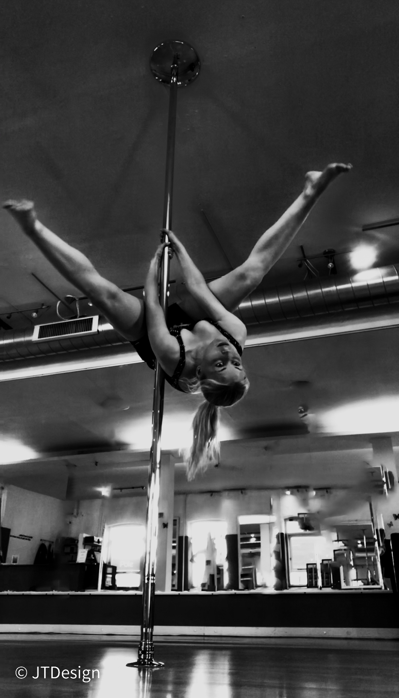

MIN PORTFOLIO
FØR

I Adobe Illustrator kan man forvandle sine billeder til gode og sjove illusioner og figurer ved hjælp af programmets kreative funktioner og værktøjer.
EFTER
Ved hjælp af Illustrator har jeg kunnet lave en sød fødselsdagsgave til min moster. Hun havde bedt om, at dette billede af hendes lille søn skulle forvandles til en lille tegneseriefigur.
FØR
Min skønne kæreste og jeg juleaften
EFTER

Et andet eksempel på, hvad vi har lavet i Illustrator, er et selvportræt. Jeg valgte et outline-billede af min kæreste og mig.
FØR
Til at starte med lavede vi vores Wireframes til den kommende dating app, som vi skulle lave til en workshop i timen
EFTER
 Dating AppI Adobe XD kan man udarbejde forskellige prototyper til forskellige behov. Derudover kan man lave layouts og wireframes,
samarbejde og dele forskellige filer, hvilket gør XD til et fedt værktøj at arbejde med. Ved hjælp af Adobe XD har jeg i samarbejde med nogle andre multimediedesignere lavet en funktionel prototype til en datingapp for ældre.
FØR
I "før" billedet kan man se alle detaljer, personer i bagrunden og mig som ligner en klovn i spejlet
EFTER
Ved hjælp af Adobe Lightroom, fik jeg lagt skygger og belysningen om i billedet, hvilket jeg synes gjorde en hel del ved billedet
Derud over blev alle i spejlet fjernet.
KONTAKT
KONTAKT MIG
- Julie-Timian Toftegaard
- +45 61 73 42 90
- Seebladsgade 1, 5000 Odense C
- Julie-Timian@outlook.dk